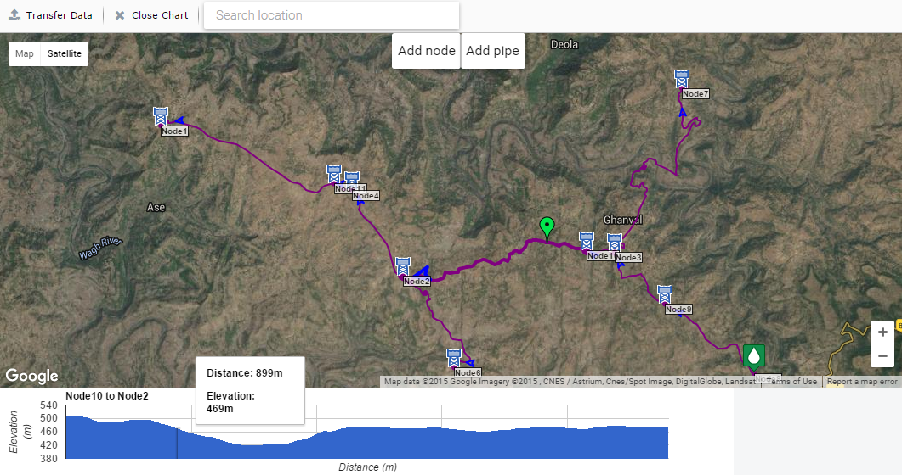
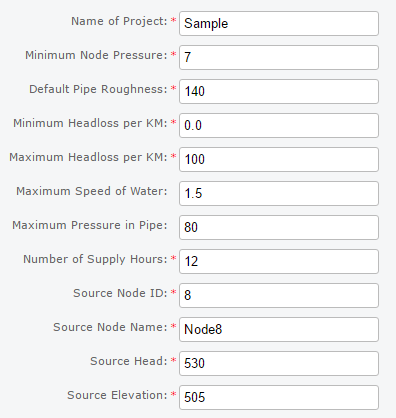
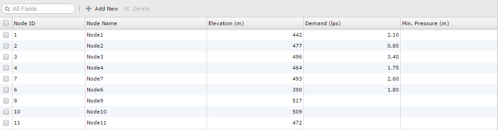
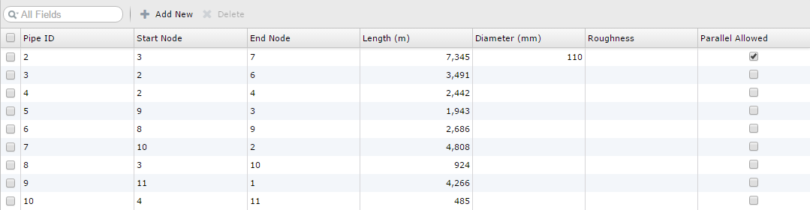
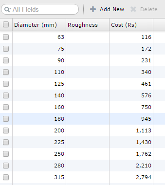
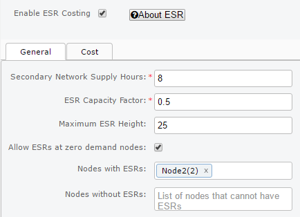
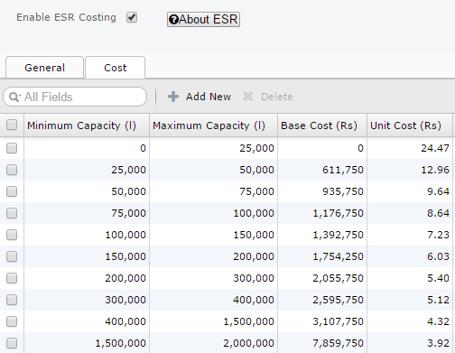
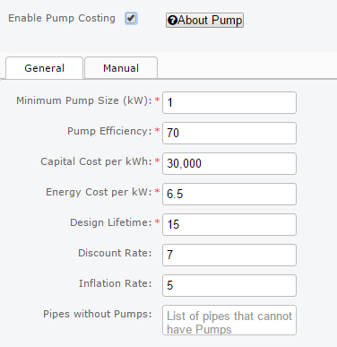
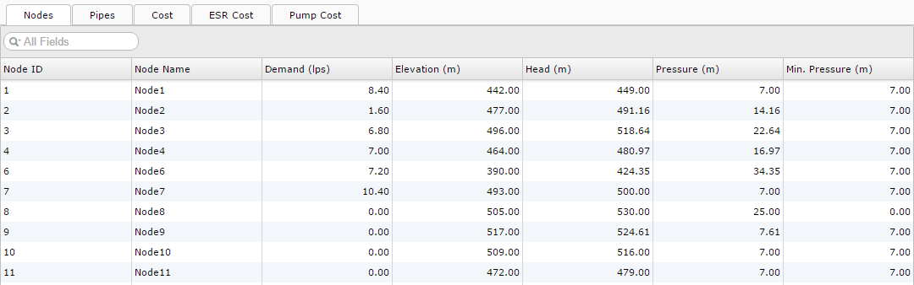

Using JalTantra
JalTantra is a system for design and optimization of water distribution networks. This page explains the inputs, outputs, and each tab of the system interface.
JalTantra System: https://www.cse.iitb.ac.in/jaltantra
Sample Files
Download sample input and output files to understand the expected format before entering your own network.
Basic Network
With ESR Option
With ESR and Pump Option
Input, Output & Objective
Variables marked {} are optional.
Input
- Source node: head
- Node: elevation, {demand}, {min pressure}
- Pipe: start/end node, length, {roughness}, {diameter}, {parallel allowed}
- Commercial pipe diameter: cost
- ESR: construction cost, capacity factor, {max height}
- Pump: efficiency, capital cost/kW, energy cost/kWh, lifetime, {discount & inflation rate}
Output
- Pipe diameters
- [ESR: location, height, capacity, nodes served]
- [Pump: location, power, head provided]
Objective & Constraints
- Minimize total pipe cost [+ ESR cost] [+ Pump cost]
- Min pressure maintained at each node
- Demand met at each node
- Diameters from commercial pipe data only
- Network must be branched (no loops)
- Single sourced
Map Tab

| Action | Description |
|---|---|
| Transfer Data | Transfer node and pipe information to the Nodes and Pipes tabs. |
| Close Chart | Deselect the currently selected pipe and close its elevation chart. |
| Search Location | Search for a location on the map. Type and select from the dropdown or press Enter. Can also enter lat/long coordinates directly. |
| Add Node | Click the button then click a point on the map to add a node. You can modify the node name, ID, and location (lat/long or by dragging), and set whether it is the source or an ESR node. |
| Add Pipe | Click the button then click two existing nodes to add a pipe between them. |
| Right-click map | Options to add/edit/delete nodes, add/delete/split pipes, or close the elevation chart. |
| Right-click node | Options to delete or edit the node. Deleting a node removes all connected pipes. |
| Right-click pipe | Options to delete or split a pipe, or close the elevation chart. Splitting adds a node at the split point and creates two pipes. |
General Tab

| Field | Description |
|---|---|
| Name of Project Text | Your project name. |
| Minimum Node Pressure Double (m) | Default minimum pressure that must be maintained at all nodes. |
| Default Pipe Roughness Double | Default roughness used to calculate headloss in pipes. |
| Minimum Headloss/KM Double (m) | Minimum headloss per km allowed in each pipe. |
| Maximum Headloss/KM Double (m) | Maximum headloss per km allowed in each pipe. |
| Maximum Water Speed Double (m/s) optional, default: no constraint | Maximum speed of water in metres per second allowed in a pipe. |
| Maximum Pipe Pressure Double (m) optional, default: no constraint | Maximum pressure in metres in a pipe. Not strictly enforced — a warning is shown if exceeded. |
| Number of Supply Hours Double | Hours per day that water is supplied. E.g. 12 hours = peak factor of 2. |
| Source Node ID Integer | Unique node ID of the source. |
| Source Node Name String | Name of the source node. |
| Source Head Double (m) | Constant water head provided by the source. |
| Source Elevation Double (m) | Elevation of the source node. |
Source details should not be duplicated in the Nodes tab.
Nodes Tab

| Field | Description |
|---|---|
| NodeID Integer | Unique node ID. |
| Node Name String | Name of the node. |
| Elevation Double (m) | Elevation of the node. |
| Demand Double (L/s) optional, default: 0 | Water demand of the node. |
| Min. Pressure Double (m) optional | Minimum pressure at this node. Defaults to the value in the General tab. |
| Add New | Add an extra row for one node. |
| Delete | Remove selected rows. |
Pipes Tab

| Field | Description |
|---|---|
| PipeID Integer | Unique pipe ID. |
| Start Node Integer | Node ID of the start node. |
| End Node Integer | Node ID of the end node. |
| Length Double (m) | Length of the pipe. |
| Diameter Integer (mm) optional | Diameter of the pipe. If not set, it will be calculated by the optimizer. |
| Roughness Double optional | Roughness used to calculate headloss. Defaults to value in General tab. |
| Parallel Allowed Boolean optional, default: false | Whether a new pipe can be placed in parallel with this one. |
| Add New | Add an extra row for one pipe. |
| Delete | Remove selected rows. |
Commercial Pipes Tab

| Field | Description |
|---|---|
| Diameter Integer (mm) | Unique diameter of the commercial pipe. |
| Roughness Double optional | Roughness of this pipe. Defaults to value in General tab. |
| Cost Double (Rs/m) | Cost per metre of this commercial pipe. |
| Add New | Add an extra row for one commercial pipe diameter. |
| Delete | Remove selected rows. |
ESR Tab

| Field | Description |
|---|---|
| Secondary Network Supply Hours Double | Hours per day that an ESR provides water to its secondary network. |
| ESR Capacity Factor Double | Size of ESR relative to the daily demand it serves. E.g. 0.5 means ESR capacity is half the daily demand. |
| Maximum ESR Height Double (m) optional, default: no constraint | Maximum ESR height in metres. |
| Allow ESRs at zero demand nodes Boolean default: false | Allow ESRs at nodes with zero demand. Disabling this significantly speeds up optimization. |
| Nodes with ESRs | List of nodes that must have ESRs. Default: no constraint. |
| Nodes without ESRs | List of nodes that must not have ESRs. Default: no constraint. |
ESR Cost Tab

| Field | Description |
|---|---|
| Minimum Capacity Double (L) default: max of previous row | Minimum capacity for this row in the ESR cost table. |
| Maximum Capacity Double (L) | Maximum capacity for this row in the ESR cost table. |
| Base Cost Double (Rs) default: calculated from previous row | Base cost of an ESR with capacity in this range. |
| Unit Cost Double (Rs/L) | Unit cost per litre for an ESR in this capacity range. |
| Add New | Add an extra row to the ESR cost table. |
| Delete | Remove selected rows. |
Pump Tab

| Field | Description |
|---|---|
| Minimum Pump Size Double (kW) | Minimum pump size in kW that can be installed. |
| Pump Efficiency Double (%) | Efficiency of the pump expressed as a percentage. |
| Capital Cost per kW Double (Rs) | Capital cost of the pump per kW of installed capacity. |
| Energy Cost per kWh Double (Rs) | Energy cost per kWh consumed. |
| Design Lifetime Integer (years) | Number of years for which pumps will be operational. |
| Discount Rate Double (%) default: 0 | Interest rate as a %. Higher discount rate reduces the effective energy cost of the pump. |
| Inflation Rate Double (%) default: 0 | Rate at which prices rise as a %. Higher inflation rate increases the effective energy cost of the pump. |
| Pipes without Pumps | List of pipes that cannot have pumps. Default: no constraint. |
Results Tab

| Sub-tab | Contents |
|---|---|
| Node Tab | Node-wise results including head and pressure values for each node. |
| Pipe Tab | Pipe-wise results including flow, diameter, headloss, headloss per km, and cost for each pipe. |
| Cost Tab | Cost results for each diameter of commercial pipe used. |
| ESR Tab | Cost results for each ESR to be constructed. |
| Pump Tab | Cost results for each pump to be installed. |
Hints & Troubleshooting
If you get a timeout message, try one or more of the following:
- Reduce the number of possible ESR locations.
- Disable ESR at dummy (zero demand) nodes.
- Disable ESR optimization entirely.
- If the network still times out, download and use the local version of JalTantra.
If you get a message saying "unable to solve network", try one or more of the following:
- Lower the minimum node pressure (in the General tab or for specific nodes).
- Increase the head of your source node.
- Reduce demand for nodes.
- Reduce elevation for nodes.
- Add commercial pipes with larger diameters.
- Verify that you are using units consistently throughout.